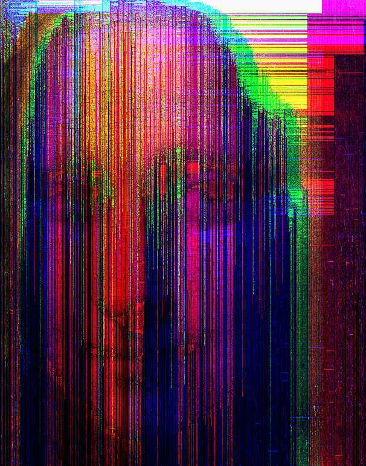
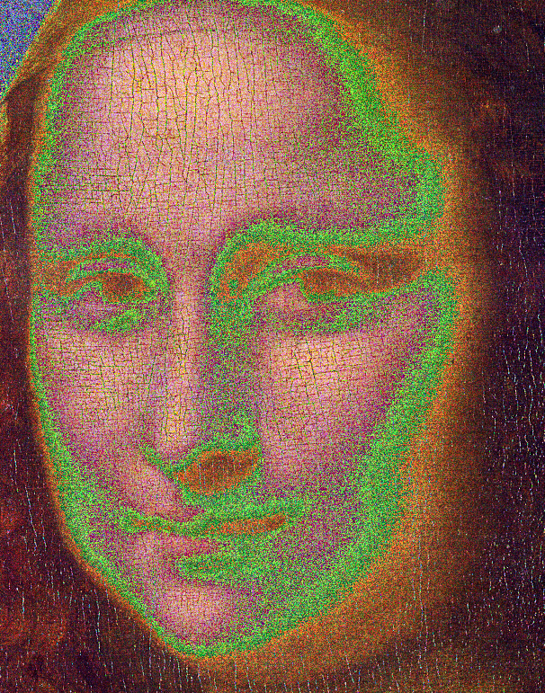

Assignment 5: Give a little bit
Due Friday, February 25, before midnight
The goals for this assignment are:
-
Understand binary representations of data types
-
Directly manipulate basic types at the bit level
-
Work with bitwise operators: |, &, ~, ^
-
Work with binary files
All programs must run without memory errors and leaks!
1. Four letter words
In the program, word.c, implement a program that asks the user for a 4-letter word
and stores the characters within a single unsigned int.
$ ./word
Enter 4 characters: love
Debug: e = 0x00000065
Debug: v = 0x00007600
Debug: o = 0x006F0000
Debug: l = 0x6C000000
Your number is: 1819244133 (0x6c6f7665)
$ ./word
Enter 4 characters: !@#$
Debug: $ = 0x00000024
Debug: # = 0x00002300
Debug: @ = 0x00400000
Debug: ! = 0x21000000
Your number is: 557851428 (0x21402324)
----Requirements/Hints:
-
You can assume the user enters a valid 4-letter word
-
For debugging, print the hexadecimal values of each character, shifted to its correct spot
2. Binary to ASCII
In the program, binarychar.c, implement a program that asks the user for an 8-bit
binary number and outputs the corresponding character.
$ make binarychar
gcc -g -Wall -Wvla -Werror binarychar.c -o binarychar
$ ./binarychar
Enter 8 bits: 01100001
Your character is: a
$ ./binarychar
Enter 8 bits: 01111100
Your character is: |Requirements/Hints:
-
You can assume that the user enters a valid 8-bit binary number
3. Read raw
In the file, read_ppm.c, implement a modified version of your PPM reader from
Assignment 04 that reads PPM files in binary format,
rather than ascii format.
In raw format, the header information is still ASCII (although the magic number is "P6", not "P3"),
but the pixel data is in binary format. Use fread to read in the pixels.
Use test_ppm.c to again test that your reader is working
$ make test_ppm
gcc -g -Wall -Wvla -Werror test_ppm.c read_ppm.c -o test_ppm
$ ./test_ppm
Testing file feep-raw.ppm: 4 4
(0,0,0) (100,0,0) (0,0,0) (255,0,255)
(0,0,0) (0,255,175) (0,0,0) (0,0,0)
(0,0,0) (0,0,0) (0,15,175) (0,0,0)
(255,0,255) (0,0,0) (0,0,0) (255,255,255)Requirements/Hints:
-
Remember to open the file with "rb", not "r"
-
Use
freadto copy all the pixel data into your array as one large block -
If you needed to modify the function signature in
ppm_readbecause you allocated an array of arrays, be sure to updateread_ppm.hhere as well. Just be careful to keep the new definition of ppm_pixel!
4. Glitch
Glitch Art is the practice of leveraging technological errors for artistic purposes. Some cool examples can be found here by glitchartbot.

First, implement a new function, write_ppm, defined in read_ppm.c. Similarly to Assignment 04, you should change the definition of write_ppm if you use an "array of arrays" to store your pixels. Be careful that you do not change the definition of ppm_pixel!
Then write a program, glitch.c, that reads in a PPM file and "glitches" it. Your program should save the modified PPM in a new file with the suffix "-glitch". For example, if you load in the file
"monalisa.ppm", you should output a file named "monalisa-glitch.ppm".
$ ./glitch monalisa.ppm
Reading monalisa.ppm with width 606 and height 771
Writing file monalisa-glitch.ppmOriginal Image |
Glitched Image |

|

|
Requirements/Hints:
-
Implement a function to write your PPM as a binary file, e.g. with the option "wb".
-
Use
fwriteto write to your file. -
Save the result to
<filename>-glitch.ppm -
To start, implement a minimal glitch, which shifts each color value by either 1 or 2 bits, choosen at random, e.g.
newcolorvalue = oldcolorvalue << (rand() % 2);. Your result should look like -
Submit your glitched images as part of your submission!
Original Image |
Result of random bit shift |
|
|

|
Feel free to be creative with your glitches. You can use a combination of bit operations, switching colors, adding colors, etc. Anything goes! Also, feel free to use your own images. PPM images can be exported using Gimp or Photoshop.
5. Submit your work
Push you work to github to submit your work.
$ cd A01
$ git status
$ git add *.c
$ git status
$ git commit -m "assignment complete"
$ git status
$ git push
$ git status